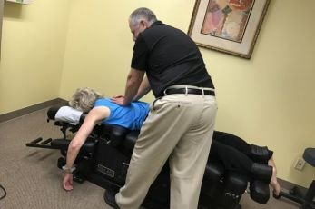
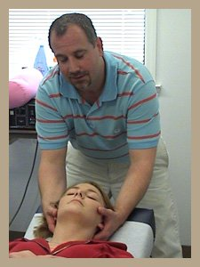
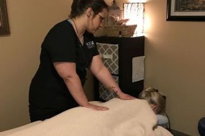
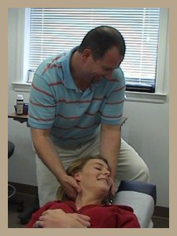

Services
McCallie Chiropractic and Rehabilitation Center offers chiropractic care and massage therapy from its brick house at 920 McCallie Ave. Every service below comes from the practice's own description of its work.

01
Chiropractic adjustments
Dr. Adair adjusts by hand. The chiropractor uses his hands to manipulate the joints of the body, particularly the spine, to reduce pain and restore or enhance joint function. His training covers Diversified, Gonstead, Thompson, Activator, flexion-distraction, and Webster technique, among others.
02
Low back pain
Basic management of low back pain often involves a four-stage plan: reduction of pain, recovery of function, rehabilitation, and reinforcement. The chiropractor's purpose is to make the spine and its nerves, discs, and muscles healthier, stronger, and more stable by correcting vertebral subluxations.

03
Neck pain and headaches
Neck pain and some types of headaches are treated through precise cervical manipulation. The adjustment works to improve joint mobility in the neck, restore range of motion, and reduce muscle spasm, which helps relieve pressure and tension.

04
Massage therapy
Melody Karm, a licensed massage and neuromuscular therapist with over 22 years of experience, and Harmony Sovia, a licensed massage therapist since 2007 and certified medical massage practitioner since 2017, offer trigger point, Swedish, sports, deep tissue, prenatal, reflexology, cranial sacral, and aromatherapy massage. Sessions are tailored to the client's individual needs.
Also at the practice
Sciatica
Sciatica is pain caused by compression, irritation, or inflammation of the sciatic nerve, often starting in the lower back. Treatment finds the source of the nerve irritation and relieves the pressure causing the pain, so the body can heal naturally. Treatment varies with the severity of the condition.
Chiropractic care in pregnancy
A large percentage of women experience back discomfort during pregnancy. The practice has a special table designed for pregnant patients. Dr. Adair co-authored research on low back pain during pregnancy and completed an internship at the Pregnancy Pain Clinic at Washington University and Missouri Baptist Hospital.

Your first visit
To schedule an appointment with Dr. Adair, call 423-752-7464. New patients should arrive 10 minutes early with insurance identification cards so the practice can verify benefits before treatment and complete the paperwork.
Call to ask: +1 423-752-7464